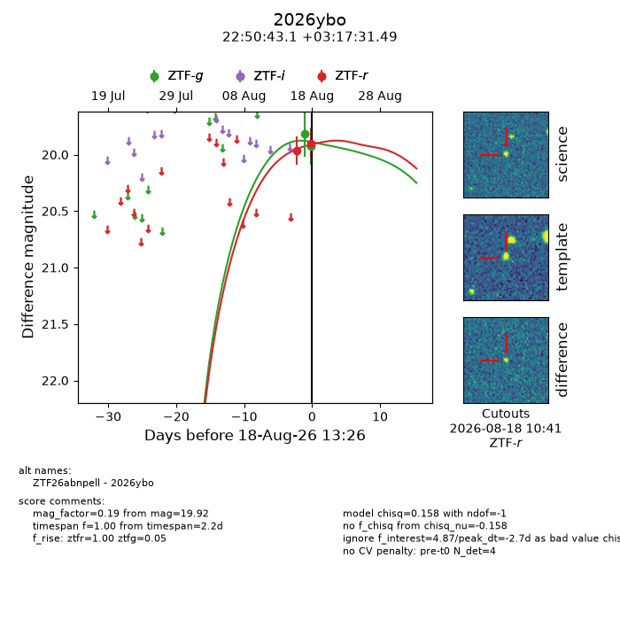
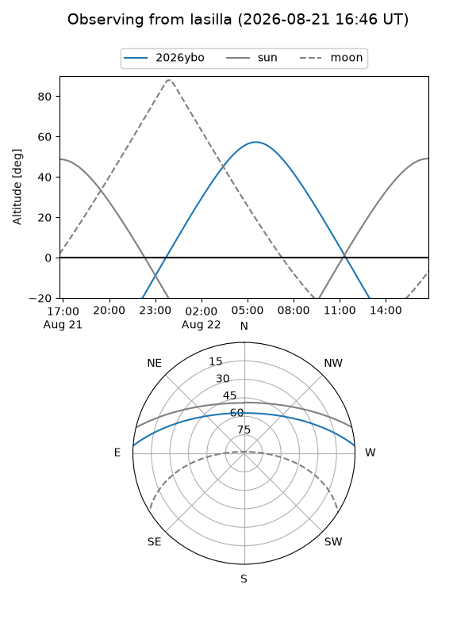
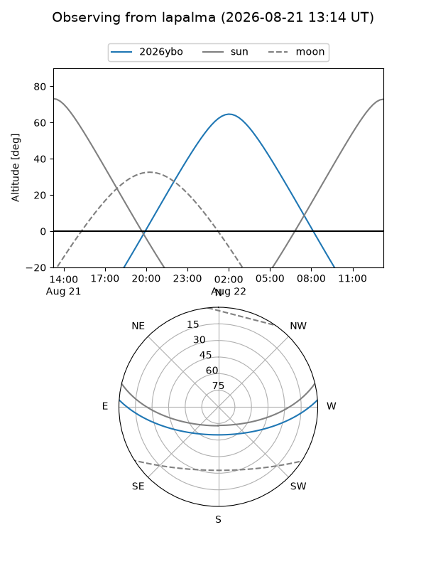
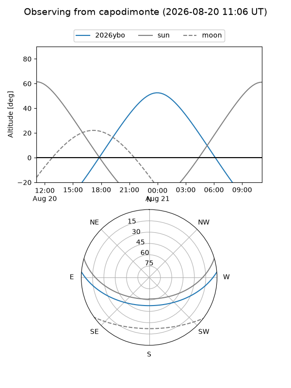
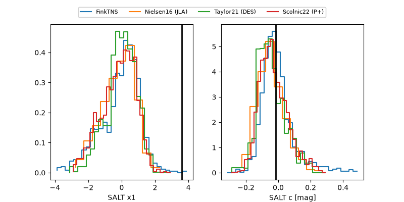

2026ybo
Target 2026ybo at 2026-08-18 13:30
Aliases and brokers:
FINK-ZTF: ztf.fink-portal.org/ZTF26abnpell
Lasair-ZTF: lasair-ztf.lsst.ac.uk/objects/ZTF26abnpell
ALeRCE-ZTF: alerce.online/object/ZTF26abnpell
YSE-PZ: ziggy.ucolick.org/yse/transient_detail/2026ybo
TNS name: wis-tns.org/object/2026ybo
Direct TNS query: direct search
alt names
ZTF26abnpell (ztf,fink_ztf)
2026ybo (tns,yse)
Coordinates:
equatorial (ra, dec) = 342.6795,+3.29208
equatorial (HMS+DMS) = 22:50:43.08,+03:17:31.49
galactic (l, b) = (74.4704,-47.89316)
Flags:
TNS type: nan
peak dt: -2.7
Photometry:
last ztfg=19.92, ztfr=19.90
2 ztfg, 2 ztfr detections
Lightcurve

Visibility



Additional plots
